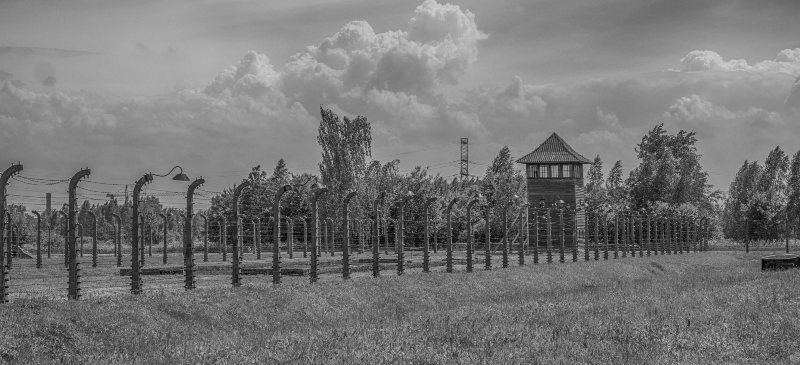
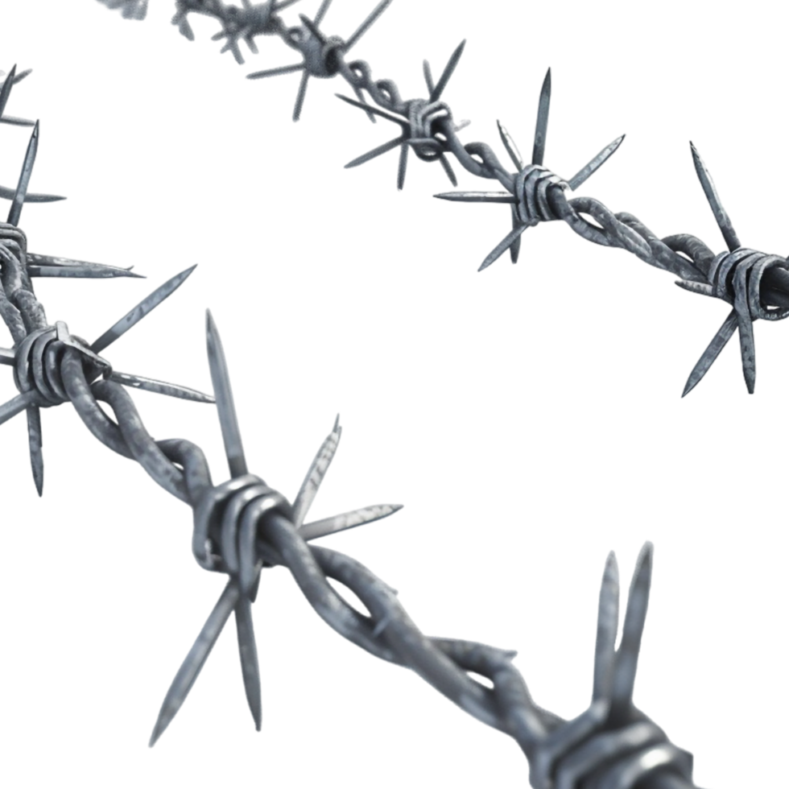
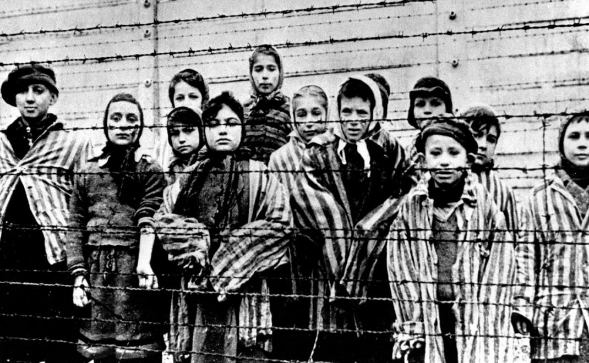
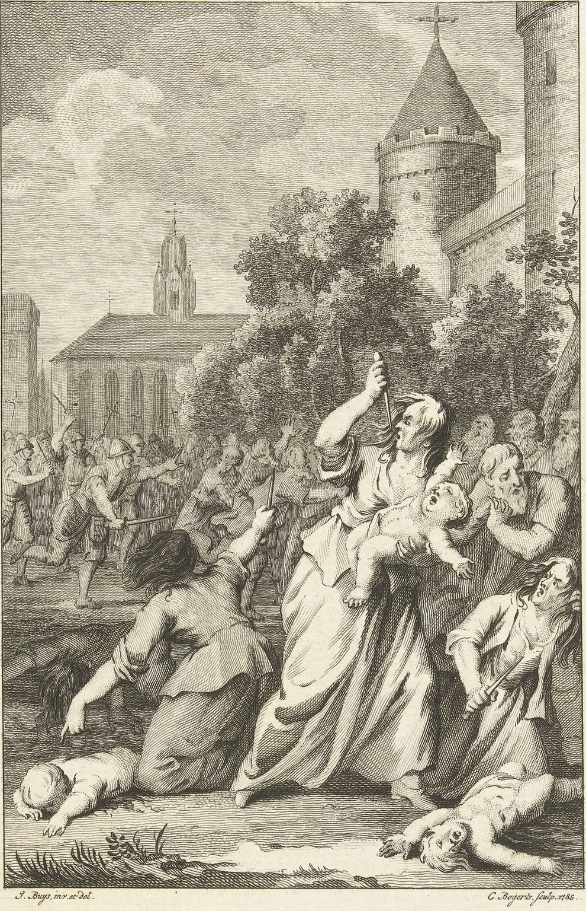

 EL HOLOCAUSTO
El Holocausto es uno de los episodios más oscuros de la historia humana, caracterizado
por el genocidio sistemático y burocráticamente organizado de seis millones de judíos y millones de otras
víctimas por el régimen nazi de Adolf Hitler entre 1941 y 1945. Este genocidio es también conocido como la
Shoah, palabra hebrea que significa "catástrofe".
El antisemitismo, o el odio hacia los judíos, no era un fenómeno nuevo en Europa. Durante siglos, los judíos
fueron perseguidos, discriminados y considerados como chivos expiatorios en varias ocasiones. La propaganda
nazi amplificó estos prejuicios, culpando a los judíos de los problemas económicos, sociales y políticos que
enfrentaba Alemania después de la Primera Guerra Mundial.
Adolf Hitler y el Partido Nacionalsocialista Obrero Alemán (Partido Nazi) llegaron al poder en Alemania en
1933. Hitler fue nombrado canciller, y rápidamente comenzó a consolidar el poder mediante la eliminación de
la oposición política y la promulgación de leyes antisemitas. La ideología nazi sostenía que los arios eran
una "raza superior" y que los judíos, así como otras minorías, eran "inferiores" y debían ser eliminados.

Fases del Holocausto
1. Persecución y Segregación (1933-1939):
Leyes de Núremberg (1935): Estas leyes fueron un conjunto de legislaciones raciales que privaron a los judíos
de la ciudadanía alemana y prohibieron los matrimonios y relaciones sexuales entre judíos y no judíos. Los
judíos fueron gradualmente excluidos de la vida pública, la educación y la economía.
Kristallnacht (1938): La "Noche de los Cristales Rotos" fue un pogromo masivo contra los judíos en Alemania
y Austria. Durante la noche del 9 al 10 de noviembre de 1938, las sinagogas fueron incendiadas, los negocios
judíos saqueados, y miles de judíos fueron arrestados o asesinados.
Ghettos: Con el inicio de la Segunda Guerra Mundial en 1939, los nazis comenzaron a forzar a los judíos a
vivir en ghettos, áreas urbanas cerradas donde las condiciones de vida eran inhumanas. El más famoso de estos
ghettos fue el gueto de Varsovia en Polonia, donde el hambre, las enfermedades y el hacinamiento cobraron la
vida de cientos de miles de personas.
2. El Camino a la Solución Final (1939-1941):
Invasión de Polonia (1939): La invasión nazi de Polonia marcó el comienzo de la Segunda Guerra Mundial y la
implementación de políticas de exterminio en los territorios ocupados.
La SS (Schutzstaffel) y otras fuerzas de seguridad comenzaron a llevar a cabo asesinatos en masa de judíos y
otros grupos considerados indeseables.
Einsatzgruppen: Estas unidades móviles de exterminio siguieron al ejército alemán en su avance hacia el este.
Su objetivo era eliminar a los judíos, comunistas, intelectuales y otros opositores al régimen. Los
Einsatzgruppen ejecutaron a más de un millón de personas, a menudo mediante fusilamientos en masa en fosas
comunes.
Planificación de la Solución Final: En 1941, los nazis decidieron implementar la "Solución Final al Problema
Judío", un plan para exterminar a todos los judíos de Europa.
Este genocidio sistemático fue coordinado en la Conferencia de Wannsee en enero de 1942, donde se detalló la
logística del transporte y el asesinato de millones de personas.
3. El Genocidio: Campos de Concentración y Exterminio (1941-1945):
Campos de Exterminio: Los nazis establecieron campos de exterminio en Polonia, donde las víctimas eran
asesinadas en cámaras de gas. Auschwitz-Birkenau, Treblinka, Sobibor, Majdanek, Chelmno y Belzec son algunos
de los más conocidos. Auschwitz-Birkenau, el más grande, se convirtió en el símbolo del Holocausto. Aquí se
asesinó a más de un millón de personas, en su mayoría judíos, pero también gitanos, prisioneros de guerra
soviéticos y otros.
Mecanización del Asesinato: Los nazis desarrollaron una eficiencia brutal en la exterminación, utilizando
trenes para transportar a las víctimas a los campos, donde eran despojadas de sus pertenencias, seleccionadas
para trabajos forzados o la muerte, y asesinadas en cámaras de gas. Los cuerpos eran incinerados en crematorios
para eliminar las evidencias de los crímenes.
Trabajos Forzados: Muchos prisioneros que no fueron asesinados inmediatamente fueron sometidos a trabajos
forzados en condiciones inhumanas. El trabajo esclavo se utilizó para apoyar el esfuerzo de guerra alemán, y
las condiciones de trabajo, junto con la desnutrición y el abuso, resultaron en la muerte de millones de personas.
4. Resistencia y Liberación (1944-1945):
Resistencia Judía: A pesar de las abrumadoras probabilidades, hubo numerosos actos de resistencia, tanto dentro
como fuera de los campos de concentración. En el gueto de Varsovia, los judíos se levantaron en armas en abril
de 1943, resistiendo durante casi un mes antes de ser aplastados. En los campos de exterminio, como Sobibor y
Treblinka, los prisioneros organizaron revueltas que resultaron en la fuga de algunos de ellos.
Liberación de los Campos: A medida que las fuerzas aliadas avanzaban en Europa, comenzaron a liberar los campos
de concentración. La liberación de Auschwitz por el Ejército Rojo soviético el 27 de enero de 1945 reveló al mundo
la magnitud de las atrocidades nazis. Los soldados encontraron montañas de cuerpos, sobrevivientes demacrados y
evidencia irrefutable del genocidio.
Marchas de la Muerte: En los últimos meses de la guerra, los nazis intentaron destruir las evidencias de sus
crímenes evacuando los campos y forzando a los prisioneros a realizar largas marchas hacia el interior de
Alemania. Miles murieron en estas "marchas de la muerte" debido al agotamiento, el hambre y la ejecución sumaria.

«Persecución de los judíos por los Cruzados».
Grabado de Jacobus Buys para Cornelis Bogerts.
Ilustración tomada de Jacques Basnage de Beauval,
La historia de los judíos desde los tiempos de
Jesucristo hasta el presente. Para la continuación
o tercera parte en las obras de Flavio José
Colección: Museo Rijksmuseum, Ámsterdam